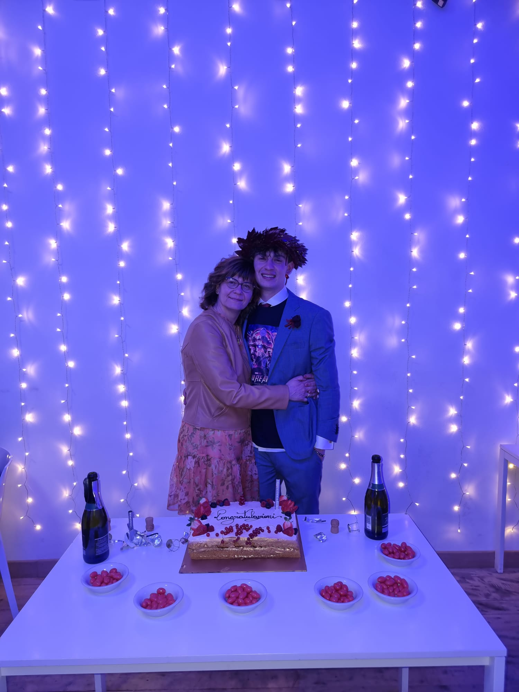

Di ringraziamenti per te potrei scriverne per ore, forse per interi libri, e comunque non basterebbero a raccontare quanto sia stata fondamentale la tua presenza in ogni momento della mia vita, questo compreso. Perché, in fondo, la mamma è sempre la mamma… e tu lo sei stata per me nel modo più bello possibile. Hai sempre saputo leggermi dentro, capire i momenti, trovare il giusto equilibrio tra guidarmi e lasciarmi libero. Hai saputo quando intervenire e quando fare un passo indietro, permettendomi anche di sbagliare, perché a volte non esistono lezioni più importanti degli errori. E di errori ne ho fatti, e ne farò ancora, perché sai bene che non sono uno che si tira indietro o che evita di metterci la faccia. E questo lo devo anche a te, a come mi hai cresciuto. Oggi non ho paura di sbagliare, perché so che, qualunque cosa accada, avrò sempre le spalle coperte. So che ci sarà sempre un posto sicuro in cui cadere, un sostegno costante, una presenza che crede in me senza condizioni: la mia mamma. Ti voglio bene. Grazie di tutto. Sei il mio sorriso, e lo sarai per sempre.